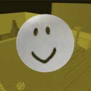

<div class="home">
  <p class="text-focus">
    <i>realjame: Always under construction, never working, always sleeping...</i>
  </p>

  <h2>Recent Posts</h2>
  <!--
  This code will return the latest 3 posts with/without the devlogs tag.
  We can't just use the limit property on a for loop for this, because if a post is filtered
  we need to search beyond the first 3.
  --><ul class="post-list" style="margin: 0;">
    {%- assign count = 0 -%}
    {%- for post in site.posts -%}
      {%- unless post.tags contains "Devlogs" -%}
        {%- if count < 3 -%}
          {%- assign date_format = site.minima.date_format | default: "%b %-d, %Y" -%}
          <li>
            <span class="post-meta">{{ post.date | date: date_format }}</span>
            <a class="post-link" href="{{ post.url | relative_url }}">
              {{ post.title | default: "-Untitled-" }}
            </a>
            {%- if post.description -%}
              {{ post.description }}
            {%- endif -%}
          </li>
          {%- assign count = count | plus: 1 -%}
        {%- else -%}
          {%- break -%}
        {%- endif -%}
      {%- endunless %}
    {%- endfor -%}
  </ul>
  <br>
  <h2>Recent Devlogs</h2>

  <ul class="post-list" style="margin: 0;">
    {%- assign count = 0 -%}
    {%- for post in site.posts -%}
      {%- if post.tags contains "Devlogs" -%}
        {%- if count < 3 -%}
          {%- assign date_format = site.minima.date_format | default: "%b %-d, %Y" -%}
          <li>
            <span class="post-meta">{{ post.date | date: date_format }}</span>
            <a class="post-link" href="{{ post.url | relative_url }}">
              {{ post.title | default: "-Untitled-" }}
            </a>
            {%- if post.description -%}
              {{ post.description }}
            {%- endif -%}
          </li>
          {%- assign count = count | plus: 1 -%}
        {%- else -%}
          {%- break -%}
        {%- endif -%}
      {%- endif %}
    {%- endfor -%}
  </ul>

  <hr>

  <h2>Quick Links</h2>

  <dl>
    <dt>
      
      <a href="https://wiki.realja.me">Roblox Legacy Documentation</a>
    </dt>
    <dd>A rehosting of the Roblox Wiki from 2012, expanded with updated documentation and resources to help people make new games for classic clients in 2023.</dd>
    <dt>
      
      <a href="https://textarea.site">textarea.site</a>
    </dt>
    <dd>A simple textbox to instantly start writing.</dd>
    <dt>
      
      <a href={% post_url /blog/2022-10-24-introducing-spooking-out %}>Spooking Out!</a>
    </dt>
    <dd>A game made for the 2010 Roblox engine about catching ghosts.
      <a href="{% post_url /blog/2022-11-02-spooking-out-modern-roblox-port %}">There's a port to modern Roblox too!</a>
    </dd>
    <dt>
      
      <a href="https://github.com/real-jame">My GitHub</a>
    </dt>
    <dt>
      
      <a href="https://twitter.com/real__jame">Follow me on Twitter!</a>
      <a href="https://wetdry.world/@jame">(Or Mastodon!)</a>
    </dt>
  </dl>

  <hr>

  <h2>About Me</h2>

  <i>This is the website of "realjame", AKA James, a programmer with some finished projects and a mountain of unfinished ones.</i>

  <p>I'm primarily known for old Roblox stuff - making new games in decade-old versions of the Roblox client, or otherwise supporting such efforts. This is only the beginning 😉
    I also do general programming, currently only web development, but I am interested in other fields such as desktop and homebrew software.</p>

  <p>The blog is the main part of this site. I probably left out a couple things I've written about, after all.
    <a href="/blog">Care to take a read?</a>
  </p>

  <hr>

  <h2>My Button</h2>

  <p>I have my own 88x31 gif button for this website! I would be humbled if you make use of it. If you do, please let me know, I'd love to see your site!</p>

  <p>The button is a scene I quickly created in the old Roblox engine. I might change the button often in the future, putting the "logo" in different maps and skyboxes - right now it's just a good old baseplate and default skybox.</p>

  <p>So on that note, if you put the button on your site, it might be a good idea for the image source to link directly to my site, instead of making a copy on your own server. So when I update it, your website will have the updated design!</p>

  <small>Hey, I mean you can do what you want to though.</small>

  <textarea readonly>
    <a href="https://realja.me"></a>
  </textarea>

</div>
{% include buttonrow.html %}